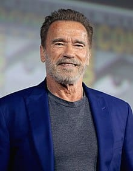

Hollywood is an are in los Angeles country in the state of California in the united states of America between the west
and the northwest of the city center of Los Angeles.
reason for its fame is the presence of the movie studios and the international stars in it, it is the historical center of
American cinema and American actors
| Youssef Al-Sharif is Egyptian actor. His real name Mohammed Ismail Naji, was his first appearance in the film seven papers kuchinh in the starring role, and then took part in the film open your eyes, serial client 1001, and the series on the backburner, and the series of Cinderella, film Halim in 2006, and he starred in the film The last of the world in 2006, until director Youssef Chahine chose him in 2007 to participate in his last film before his death, "هى فوضى" |
|
Keanu Charles Reeves is a Canadian actor. He was Born in Beirut and raised in Toronto, Reeves began acting in theatre productions and in television films before making his feature film debut in Youngblood (1986). He had his breakthrough role in the science fiction comedy Bill & Ted's Excellent Adventure (1989), and he later reprised his role in its sequels. He gained praise for playing a hustler in the independent drama My Own Private Idaho (1991), and established himself as an action hero with leading roles in Point Break (1991) and Speed (1994). |
|
Denzel Washington is an American actor. he is one of the great actors in Hollywood and he is also one of the actors who are serious in their accent, yet he has the talent and harmony in all his roles that are full of drama, excitement and comedy. Received the Cecil B. Dumel Lifetime Achievement at the 73rd Golden Globe Awards. In recognition of a number of his starring in several distinguished films, such as "Philadelphia", "Malcolm X", and "Man on Fire". |
|
Willard Carroll Smith Jr is an American actor. he is a representative of the US, and Raper and film producer, and producer of songs, and writer was born on September 25 1968 Enjoy success in TV, movies, and songs. In 2007, Newsweek magazine described him as the most influential actor in Hollywood. He was nominated for four Golden Globes, two Oscars, and won four Grammy Awards. |
|
Schwarzenegger is an Austrian actor. he began weight training at the age of fifteen, and won the title of master of the universe Mr. Universe at the age of 22 also won the Mr. Olympia competition. Olympia seven times. Schwarzenegger has been a prominent figure in bodybuilding long after his retirement and has authored several books and articles on the sport. Schwarzenegger has gained worldwide fame as a Hollywood action movie icon, who has been noted for his lead role in films such as Conan the Barbarian and The Terminator. |  | Cillian Morphy is an Ireland actor. and He was born born on the 25th of May 1976 and he is the eldest of his three siblings. His father used to work in the education sector and his mother was a teacher of the French language. Kylian began learning music and writing songs at the age of ten. He received his secondary education at a local Catholic school where his interest in acting began, after participating in a school play. Killian described it as an euphoric experience. Because of his admiration for his good performance, his teacher, "William Wall", who was a novelist and poet, advised him to continue acting. |
|